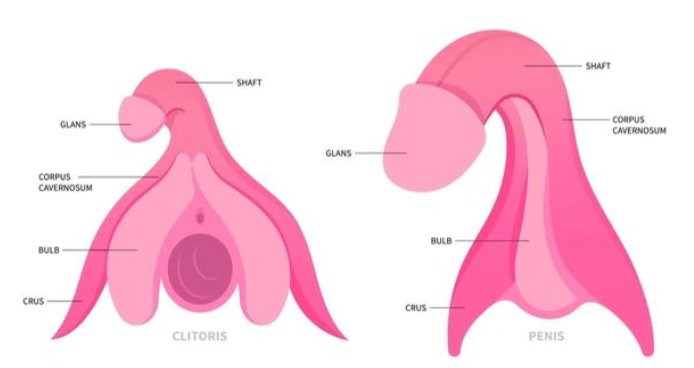

The Intersex Problem
There has been a common problem among intersex people. A lot of parents when finding out their child is intersex will often have them undergo a surgery to "fix" them. A huge problem with this is the child has no say over what their "sex" will be. It also creates a stigma that intersex people need to get fixed when in reality every human is beautiful as themselves. "For many years, the medical establishment has viewed babies born with atypical sex characteristics ashaving bodies that need to be “fixed.” As many as 1/2000 are faced with unnecessary medical interventionat an early age. Some intersex babies and older youth have undergone extensive, involuntary surgeries forno other reason than to make their bodies conform to traditional notions of what it means to be male or female."
Misconceptions About The Body

We're really not at that different. If you look at this little graphic, you can see that the clitoris and penis anatomy are very similar. They feature basically the same parts, a shaft, glans, corpus cavernosum, bulb, and crus, showing that there really aren't as my differences between us as the media makes it out to be.
Three Messages About Sex
Society has historically portrayed sex in a negative light. Theres 3 main areas that they target to put people that are sexually active, especially those that are young adults or unmarried. Here I will discuss each area.
Moral
- virginity culture
- slut shaming
- desirable vs lovable
Medical
- misrepresentation of female sexual experience
- medicalization of "problems" like intersex individuals
- Stigma around STIs and STDs
Media
- Unrealistic expectations of people
- double bind
- misrepresentation